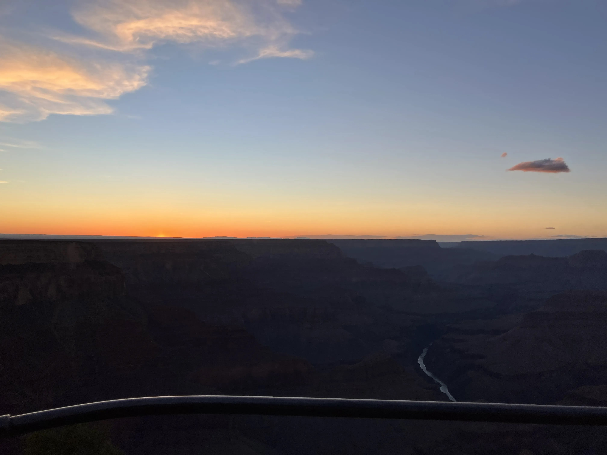

MOODY MIDDLE SCHOOL • GO RAIDERS • SCIENCE OLYMPIAD CLUB
Science Olympiad Events
View our events
Access resources and learning materials
Stay updated with what we're teaching
Consult the current official event rules for the requirements
that apply to your competition.
01
Crime Busters

Use chemistry, observation, and logical reasoning to
analyze evidence and solve a simulated crime.
Explore event +
Physical Evidence
- Identify and compare unknown materials
- Identify genetic markers, fibers, and more
- Use solubility, color, and reactions as evidence
- Reactivity Series, Magnetism, and other tests
Chromatography
- Understand paper chromatography.
- Separate mixtures into their components.
- Compare pigment and ink patterns.
- Interpret chromatograms
Forensic Analysis
- Compare fingerprints, hair, and dna
- Examine hair, fibers, and other provided evidence.
- Record observations systematically.
- Use evidence to support or eliminate hypotheses.
Scientific Reasoning
- Distinguish observations from inferences.
- Use comparison charts and reference tables.
- Evaluate evidence without jumping to conclusions.
- Build a conclusion supported by multiple clues.
02
Hovercraft
Apply physics and engineering principles to design,
construct, test, and improve a hovercraft. This event is lead by Advaith and Anish.
Explore event +
Forces and Motion
- Newton's laws of motion.
- Force, mass, acceleration, and momentum.
- Friction and resistance.
- How forces affect acceleration and stopping.
Air Pressure and Lift
- Air cushions and pressure differences.
- Lift and the reduction of surface friction.
- Airflow, leakage, and skirt design.
- How fan placement affects performance.
Electrical and Mechanical Systems
- Motors, fans, and propellers.
- Battery voltage and electrical power.
- Mass distribution and structural stability.
- Safe construction and component mounting.
Testing and Optimization
- Design controlled performance tests.
- Measure speed, travel distance, or other specified metrics.
- Change one variable at a time.
- Use repeated trials to compare designs.
- Document improvements and design trade-offs.
03
Rollercoaster
Investigate energy, motion, and forces while designing
a track that meets specified engineering constraints.
Explore event +
Energy
- Gravitational potential energy.
- Kinetic energy.
- Conservation of mechanical energy.
- Energy conversion and energy loss.
- How starting height affects motion.
Motion and Forces
- Speed, velocity, and acceleration.
- Newton's laws of motion.
- Gravity, friction, and normal force.
- Centripetal acceleration on curved tracks.
- How curves and slopes affect a moving object.
Engineering and Construction
- Track geometry and slope design.
- Structural stability and material selection.
- Transitions between straight and curved sections.
- Design constraints and dimensional requirements.
Measurement and Improvement
- Measure travel time and distance.
- Calculate speed from measured data.
- Identify causes of inconsistent trials.
- Compare predictions with observed performance.
- Improve the design using test results.
04
Disease Detectives
Use epidemiology and data analysis to investigate disease
patterns, identify risk factors, and evaluate prevention.
Explore event +
Epidemiology Fundamentals
- Incidence and prevalence.
- Morbidity and mortality.
- Endemic, epidemic, and pandemic patterns.
- Communicable and noncommunicable diseases.
- Reservoirs, hosts, and modes of transmission.
Study Design
- Descriptive, analytical, and experimental studies.
- Cohort and case-control studies.
- Exposure, outcome, and control variables.
- Bias, confounding, and limitations.
- Correlation versus causation.
Data and Calculations
- Calculate attack rates and disease frequencies.
- Interpret tables, graphs, and epidemic curves.
- Compare risks between exposed and unexposed groups.
- Understand relative risk and odds ratios when required.
- Identify patterns and trends in outbreak data.
Prevention and Public Health
- Chain of infection and transmission pathways.
- Vaccination and immunity.
- Sanitation, hygiene, and isolation.
- Environmental and behavioral risk factors.
- Evaluate interventions using evidence.
05
Botany
Study plant anatomy, physiology, genetics, reproduction,
ecology, and the biochemical processes that sustain life. This event is lead by Reyansh and Anvith.
Explore event +
Plant Structure
- Roots, stems, leaves, flowers, fruits, and seeds.
- Xylem and phloem.
- Meristems and plant growth.
- Stomata, guard cells, and gas exchange.
- Plant cells, chloroplasts, and organelles.
Photosynthesis
- Light-dependent reactions.
- Thylakoid membranes and photosystems.
- Photolysis and electron transport.
- ATP and NADPH production.
- Calvin cycle, carbon fixation, and glucose synthesis.
- Limiting factors such as light, temperature, and CO₂.
Cellular Respiration and ATP
- Glycolysis and pyruvate oxidation.
- Krebs cycle, also called the citric acid cycle.
- Electron transport chain.
- Proton gradients and chemiosmosis.
- ATP synthase and oxidative phosphorylation.
- Fermentation and energy yield.
Water, Minerals, and Nutrients
- Osmosis, diffusion, and water potential.
- Transpiration and cohesion-tension theory.
- Water transport through xylem.
- Phloem translocation and source-sink relationships.
- Essential mineral nutrients, including nitrogen and phosphorus.
- Plant-microbe relationships and nitrogen fixation.
Genetics and Reproduction
- DNA, genes, chromosomes, and inheritance.
- Mitosis and meiosis.
- Pollination, fertilization, and seed development.
- Sexual and asexual reproduction.
- Plant life cycles and alternation of generations.
Ecology and Plant Adaptation
- Food webs, energy flow, and nutrient cycles.
- Competition, mutualism, and parasitism.
- Plant responses to environmental conditions.
- Adaptations to drought, shade, and salinity.
- Population dynamics and ecosystem change.
06
Rocks and Minerals
Identify geological specimens and investigate the
processes that shape Earth's materials and surface. This event is lead by Abhik, Sashreek, and Skandan.
Explore event +
Mineral Identification
- Color, streak, luster, and transparency.
- Hardness and the Mohs scale.
- Cleavage, fracture, and crystal form.
- Density, specific gravity, and magnetism.
- Acid reactions and other diagnostic properties.
Mineral Chemistry
- Elements, compounds, and crystal structures.
- Silicate and nonsilicate minerals.
- Carbonates, oxides, sulfides, and sulfates.
- How chemical composition affects physical properties.
- Common mineral formulas and identifying characteristics.
Rock Types and the Rock Cycle
- Igneous rocks and magma cooling.
- Sedimentary rocks and lithification.
- Metamorphic rocks, heat, and pressure.
- Texture, grain size, and mineral composition.
- Processes connecting the three rock groups.
Geologic Processes
- Plate tectonics and the formation of rocks.
- Weathering, erosion, and deposition.
- Fossils and relative dating.
- Geologic time and Earth's history.
- How to use identification keys and reference charts.
07
Solar System
Explore planetary science, stellar evolution, orbital
mechanics, spectroscopy, and the conditions for habitability. This event is lead by Reyansh and Anvith.
Explore event +
Beginning of the Universe
- The Big Bang model and expansion of the universe.
- Cosmic background radiation and early elements.
- Formation of galaxies and large-scale structure.
- Evidence used to study the age of the universe.
Star Formation and Evolution
- Nebulae, protostars, and gravitational collapse.
- Nuclear fusion and stellar equilibrium.
- Main-sequence stars and the Hertzsprung-Russell diagram.
- Red giants, white dwarfs, neutron stars, and black holes.
- How stellar mass affects stellar evolution.
Earth's History and Planet Formation
- The solar nebula and accretion.
- Planetary differentiation and internal structure.
- Earth's geologic history and major transitions.
- Impact cratering and surface modification.
- Comparing terrestrial planets and gas or ice giants.
Spectroscopy and Composition
- Electromagnetic radiation and the spectrum.
- Emission and absorption spectra.
- Using spectral lines to identify elements.
- Inferring atmospheric and surface composition.
- Temperature, luminosity, and wavelength relationships.
Orbits and Exoplanets
- Kepler's three laws of planetary motion.
- Orbital period, semimajor axis, and eccentricity.
- Gravity and orbital dynamics.
- Transit and radial-velocity detection methods.
- Interpreting exoplanet data and measurement uncertainty.
Planetary Habitability
- Habitable zones and stellar luminosity.
- Atmospheric composition and greenhouse effects.
- Liquid water, pressure, and temperature.
- Planetary mass, gravity, and atmospheric retention.
- Magnetic fields, radiation, and stellar activity.
- Using multiple lines of evidence to evaluate habitability.
Data Analysis and Estimation
- Read plots, tables, and planetary data.
- Compare planets using consistent criteria.
- Estimate unknown quantities from given evidence.
- Evaluate uncertainty and competing explanations.
- Use permitted reference materials and technology when rules allow.
08
Boomilever
Engineer a lightweight cantilever structure that supports
a load while meeting specified design constraints. This event is lead by Advaith and Anish.
Explore event +
Structural Forces
- Tension and compression.
- Shear forces and bending moments.
- Torque and equilibrium.
- Load distribution and reaction forces.
- How geometry changes structural performance.
Structural Design
- Cantilever behavior and support conditions.
- Triangles, trusses, and bracing.
- Member length, orientation, and placement.
- Joint design and connection strength.
- Material efficiency and structural stability.
Failure and Material Properties
- Buckling under compression.
- Fracture under tension.
- Joint failure and local deformation.
- Strength-to-weight ratio.
- How material choice affects performance.
Testing and Optimization
- Measure structural mass and supported load.
- Calculate load-to-mass performance when applicable.
- Identify weak points after testing.
- Use controlled iterations to improve the design.
- Follow event-specific dimensions and construction rules.